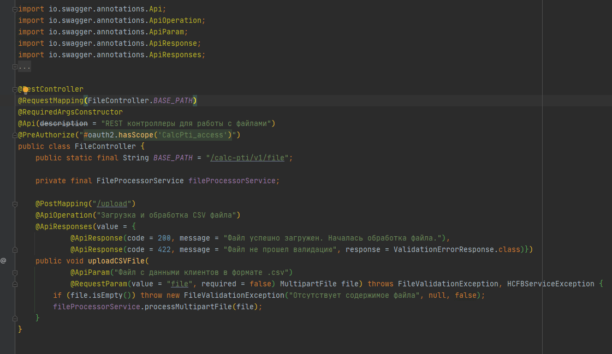

Я на 99% уверен у многих из вас были проблемы с поиском документации для нужного вам контроллера. Многие если и находили ее быстро, но в конечном итоге оказывалось что она работает не так как описано в документации, либо вообще его уже нет. Сегодня я вам докажу, что есть способы поддерживать документацию в актуальном виде и в этом мне будет помогать Open Source framework от компании SmartBear под названием Swagger, а с 2016 года он получил новое обновление и стал называться OpenAPI Specification.
Swagger
Swagger - это фреймворк для спецификации RESTful API. Его прелесть заключается в том, что он дает возможность не только интерактивно просматривать спецификацию, но и отправлять запросы – так называемый Swagger UI.
Также возможно сгенерировать непосредственно клиента или сервер по спецификации API Swagger, для этого понадобиться Swagger Codegen.
Выгдялит это так:
Вот список некоторых анотаций:
- @Operation - Описывает операцию или обычно метод HTTP для определенного пути.
- @Parameter - Представляет один параметр в операции OpenAPI.
- @RequestBody - Представляет тело запроса в операции
- @ApiResponse - Представляет ответ в операции
- @Tag - Представляет теги для операции или определения OpenAPI.
- @Server - Представляет серверы для операции или для определения OpenAPI.
- @Callback - Описывает набор запросов
- @Link - Представляет возможную ссылку времени разработки для ответа.
- @Schema - Позволяет определять входные и выходные данные.
- @ArraySchema - Позволяет определять входные и выходные данные для типов массивов.
- @Content - Предоставляет схему и примеры для определенного типа мультимедиа.
- @Hidden - Скрывает ресурс, операцию или свойство